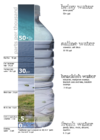

salinity
property

Source: Wikipedia
Wikipedia Page (Something wrong with this association? Let us know.)
Wikidata Page (Something wrong with this association? Let us know.)
Occurs in:
- sea_bottom_water__salinity
- sea_ice__salinity
- sea_ice_bottom_water__salinity
- sea_surface_water__salinity
- sea_water__azimuth_angle_of_gradient_of_salinity
- sea_water__east_derivative_of_salinity
- sea_water__elevation_angle_of_gradient_of_salinity
- sea_water__magnitude_of_gradient_of_salinity
- sea_water__north_derivative_of_salinity
- sea_water__salinity
- sea_water__time_average_of_square_of_salinity
- sea_water__x_derivative_of_salinity
- sea_water__y_derivative_of_salinity
- sea_water__z_derivative_of_salinity